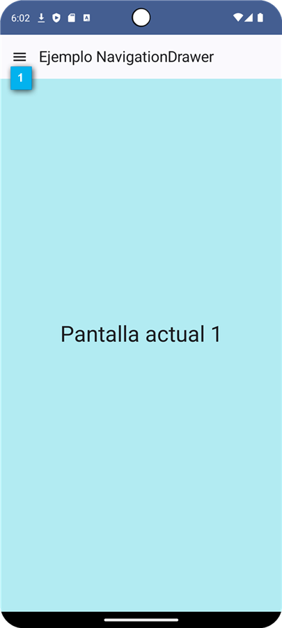
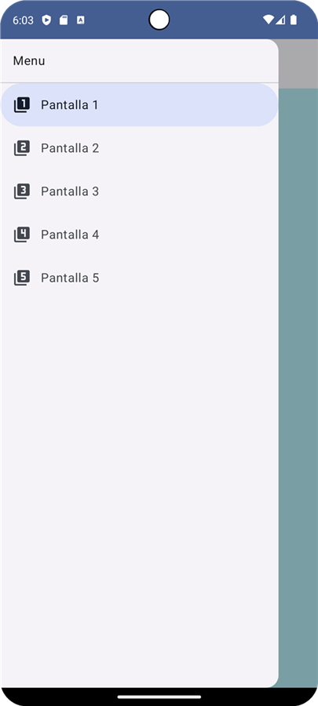
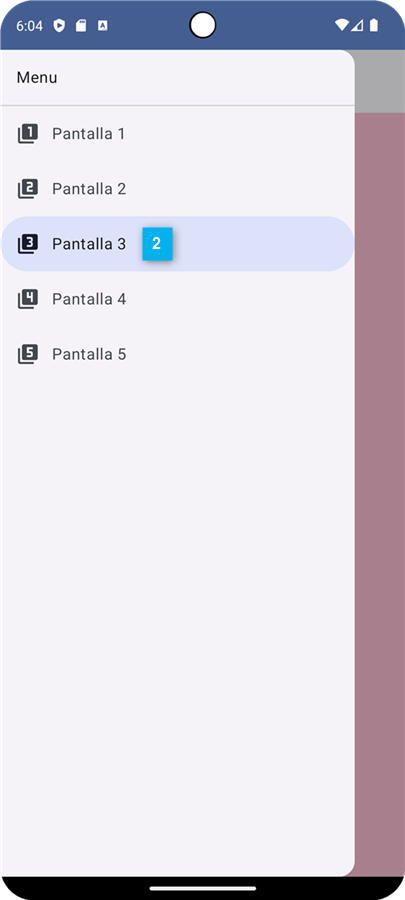
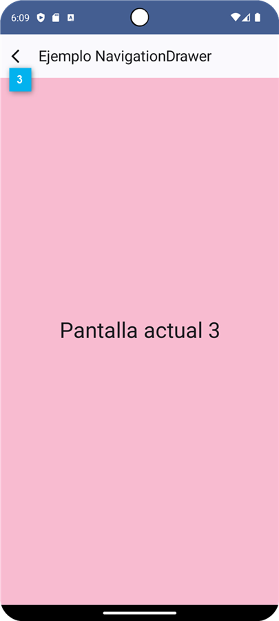

Descargar estos apuntes pdf o html
Navegación con Jetpack Compose
Documentación oficial general tanto con XML como Compose UI: Principles of navigation
Documentación oficial compose: Navigation with Compose
Codelab Básico Oficial de Google: Navigation with Compose
Codelab Avanzado Oficial de Google: Navigation with Compose
Seguridad de tipos en la navegación (Vídeo Inglés) Android Developers
New Navegación con seguridad de tipos (Vídeo Castellano): AristiDevs
Navegación en Jetpack Compose (Lista de Reproducción): Stevdza-San
Compartir datos entre pantallas (Vídeo Inglés): Philipp Lackner
Navegación con seguridad de tipos (Vídeo Inglés): Philipp Lackner
La necesidad de navegar entre pantallas es una de las características más importantes de cualquier aplicación. Android Jetpack Compose proporciona una biblioteca de navegación que le permite navegar entre pantallas, pasar datos, administrar el historial de navegación y mucho más.
Esta biblioteca, inicialmente se implementó para las aplicaciones de Android basadas en vistas XML (Activities y Fragments), incluso dispone de una herramienta visual para diseñar la navegación de la aplicación.
Ahora, la biblioteca de navegación también se puede usar con aplicaciones de Android Jetpack Compose. La biblioteca de navegación de Compose proporciona una API declarativa para definir la navegación, y una API de navegación para navegar entre pantallas. Pero sin embargo no dispone de una herramienta visual para diseñar la navegación de la aplicación.
Como la mayoría de clases y el sistema de navegación es común a las aplicaciones basadas en vistas XML y a las basadas en Compose, la documentación oficial de la biblioteca de navegación es común para ambas. Por lo que en la documentación oficial, en la mayoría de ejemplos, se muestra la implementación con vistas XML y no con Compose. Esto puede llevarnos a confusión y a pensar que la biblioteca de navegación no es compatible con Compose, pero no es así, simplemente hay que saber interpretar los ejemplos y adaptarlos a Compose. De todas formas, tienes una entrada específica para Compose en ente enlace
Desde sus inicios, la biblioteca de navegación para Compose ha tenido criticas por parte de la comunidad de desarrolladores, debido a su complejidad, falta de documentación y constantes cambios en su API. Es por eso que han surgido multitud de librerías de terceros, que en principio, facilitan la implementación evitando excesivo código "bolierplate" o incluso algunas son multiplataforma (Android, iOS, Desktop y Web)
Algunas de estas librerías son: Compose Destinations, Appyx, Voyager, Reimagined, Decompose.
Al final muchas de estas librerías son una capa de abstracción sobre la biblioteca de navegación oficial, por lo que es recomendable conocer la biblioteca oficial. Este vídeo en inglés, Philipp Lackner nos hace una reflexión sobre este tema y el porqué conocer la biblioteca oficial de Google y en todo caso hacernos nosotros mismos nuestra propia abstracción de navegación.
Incluso utilizando la biblioteca oficial, hay muchas formas de implementar la navegación y que podréis ver en los diferentes tutoriales y vídeos que hay en la red, teniendo en cuenta que en cada uno se siguen diferentes patrones de diseño.
Importante
Nosotros en este tema vamos a seguir las recomendaciones de uso y mejores prácticas de implementación que en la actualidad recomienda Google y que pueden encontrar en el siguiente enlace que recomendamos que visites y leas tras ver el tema.
Recuerda que la versión puede cambiar en el futuro, por lo que es recomendable que consultes la última versión en el enlace. También debes tener en cuanta que un cambio en el primer número de la versión, puede implicar cambios importantes en la API que vamos a describir.
Para poder utilizar la biblioteca de navegación en Compose, debemos añadir las siguientes dependencias ...
En el libs.versions.toml ...
Nota
Aunque en el ejemplo hemos puesto las entradas en varias líneas indentadas para más claridad y que quepa todo en la versión en pdf. El intérprete de Gradle para el toml no admite esta sintaxis, por lo que debes ponerlo en una sola línea.
[versions]
composeNavigation = "2.8.5"
kotlinxSerializationJson = "1.7.3"
[libraries]
compose-navigation = {
group = "androidx.navigation",
name = "navigation-compose",
version.ref = "composeNavigation"
}
kotlinx-serializarion-json = {
group = "org.jetbrains.kotlinx",
name = "kotlinx-serialization-json",
version.ref = "kotlinxSerializationJson"
}
androidx-hilt-navigation-compose = {
group = "androidx.hilt",
name = "hilt-navigation-compose",
version.ref = "hiltNavigationCompose"
}
[plugins]
kotlinx-serialization = {
id = "org.jetbrains.kotlin.plugin.serialization",
version.ref = "kotlin"
}
En el DSL definido en build.gradle.kts del proyecto ...
plugins {
alias(libs.plugins.kotlinx.serialization) apply false
}
En el DSL definido en build.gradle.kts del módulo app ...
plugins {
alias(libs.plugins.kotlinx.serialization)
}
dependencies {
implementation(libs.compose.navigation)
implementation(libs.kotlinx.serializarion.json)
// y su estamos usano Hilt y no está ya añadida
implementation(libs.androidx.hilt.navigation.compose)
}
El NavController es el encargado de gestionar la navegación entre destinos. El controlador ofrece métodos para navegar entre destinos, manejar enlaces profundos, administrar la pila de retroceso y más.
Para crear un NavController en Jetpack Compose haremos:
val navController = rememberNavController()
Puesto que rememberNavController es una función @Composable NO puede ser creado en un ViewModel. Así pues, si quieres que la mayoría de tus componentes puedan acceder a la navegación, debes crear el objeto NavController en el componente más alto de la jerarquía de composición esto es junto al NavHost del que hablaremos a continuación.
Para poder navegar entre pantallas, debemos tener un contenedor donde se muestren las pantallas. En las aplicaciones basadas en compose este contenedor es un 'composable' llamado NavHost. Al ser un contenedor, puede ocupar todo la pantalla o solo una parte de ella como se muestra en las imágenes más a a la derecha.
NavHost recibirá un NavController e irá definiendo los destinos de navegación a través de un NavGraph, este componente lo recibirá como parámetro o será creado y gestionado por el propio NavHost de forma interna, solo si no se le ha pasa. El NavGraph es básicamente por tanto, una colección de destinos recuperables.
Vamos a aplicar los conceptos anteriores a un ejemplo básico de navegación entre dos pantallas A y B.
Tal y como se muestra en la imagen de ejemplo. La pantalla A será la pantalla principal y tendrá un Scaffold con un TopAppBar y un botón que nos permitirá navegar a la pantalla B. La pantalla B tendrá un Scaffold con un TopAppBar y en ella tendrá un IconButton de vuelta a la pantalla anterior que solo puede ser pantalla A.
Descarga proyecto de ejemplo 1: EjemploNavegacionBasico1.zip
Los pasos serían los siguientes:
Primero definiremos las pantallas en el paquete ui.features
Definimos PantallaAScreen.kt que emite en la composición la pantalla A y recibe un callback que será llamado cuando se pulse el botón de navegación a la pantalla B.:
@Composable
fun PantallaAScreen(onNavigatePantallaB: () -> Unit)
Definimos PantallaBScreen.kt que emite en la composición la pantalla B y recibe un callback que será llamado cuando se pulse el botón de navegación a la pantalla anterior que solo puede ser la pantalla A.:
@Composable
fun PantallaBScreen(onNavegarAtras: () -> Unit)
Importante
Como ves, en ambos casos pasamos callbacks que serán llamados cuando se pulse el botón de navegación y así evitamos dependencias con el NavController y tendremos centralizadas todas las acciones de navegación en el NavHost.
Decidimos en que punto vamos a tener nuestro NavHost y como ya hemos comentado tendremos varias opciones. Para este ejemplo, lo normal es que esté lo más alto en la jerarquía de composición, por lo que lo pondremos en el setContent de la MainActivity y es en este punto donde crearemos al NavController.
// MainActivity.kt
class MainActivity : ComponentActivity() {
override fun onCreate(savedInstanceState: Bundle?) {
super.onCreate(savedInstanceState)
setContent {
EjemploNavegacionTheme {
Surface(modifier = Modifier.fillMaxSize()) {
val navController = rememberNavController()
NavHostEjemploBasicoInicial(navController = navController)
}
}
}
}
}
Para ello hemos definido la función composable NavHostEjemploBasicoInicial que recibe una instancia de NavHostController.
@Composable
private fun NavHostEjemploBasicoInicial(navController: NavHostController) {
NavHost(
navController = navController,
startDestination = "pantalla_A"
) {
composable(route = "pantalla_A") { backStackEntry ->
PantallaAScreen {
navController.navigate("pantalla_B")
}
}
composable(route = "pantalla_B") { backStackEntry ->
PantallaBScreen {
navController.popBackStack()
}
}
}
}
Vamos a comentar más detalladamente el código del punto anterior:
@Composable private fun NavHostEjemploBasicoInicial(navController: NavHostController) { NavHost( navController = navController, // Pasamos el NavController startDestination = "pantalla_A" // Indicamos el destino inicial ) { // En este contexto estamos definiendo un objeto NavGraphBuilder // encargado de crear el grafo de navegación. // Por lo que solo podemos usar métodos de esta clase. ... } }
@Composable private fun NavHostEjemploBasicoInicial(navController: NavHostController) { NavHost(navController = navController, startDestination = "pantalla_A") { ... // composable es uno de los métodos de NavGraphBuilder y crea un o // destin de navegación en el grafo. // Como parámetro obligatorio recibe la ruta del destino que será // una cadena de texto similar a una URL de consumo de un API REST. // Más adelante comentaremos otros parámetros opcionales. composable(route = "pantalla_A") { backStackEntry -> // Aquí irá el composable con la pantalla o Screen que se // emite en el NavHost en esta ruta del grafo. PantallaAScreen { // Callback que será llamado cuando se pulse el botón de navegación // de ir a pantalla B. Si la ruta especificada no existe en el grafo // obtendremos una excepción en tiempo de ejecución. navController.navigate("pantalla_B") } ... } } }
Por último, al definir el callback de navegación en la pantalla B hemos usado el método navigateUp que nos permite volver a la pantalla anterior, que en este caso es la pantalla A.
En este punto ya tenemos un ejemplo básico de navegación, pero en una aplicación real donde los destinos de navegación pueden ser muchos, podremos pasar parámetros entre pantallas, definir transiciones, usaremos ViewModel para acceder a la lógica de negocio, etc. El uso de cadenas para las rutas puede volver el código muy complejo. Esto hará que sea fácil cometer errores que no se detecten en tiempo de compilación y consecuentemente también será difícil de mantener o ampliar, testear y depurar.
Para solucionar esto, como comentamos en la introducción del tema, vamos a usar tipos seguros que es la recomendación actual Google y que pueden encontrar en el siguiente enlace. Por lo que vamos a refactorizar el código siguiendo los siguientes pasos:
Crearemos un paquete ui.navigation donde definiremos los destinos y el grafo de navegación.
Por cada destino de navegación crearemos un fichero <PantallaDestino>Route.kt donde definiremos la gestion de la ruta o rutas que nos lleven a esa pantalla de destino.
// Definimos la ruta y como no recibe parámetros será un data object.
// Debe ser serializable para ser pasado como parámetro en la navegación.
@Serializable
object PantallaARoute
// Definimos un método de extensión de NavGraphBuilder para poder
// usarlo en el contexto de nuestro NavHost
// Fíjate que le hemos añadido el sufijo Destination indicando que es
// un "nodo de destino" en el grafo de navegación.
fun NavGraphBuilder.pantallaADestination(
onNavigatePantallaB: () -> Unit
) {
// Aquí es donde realmente definimos el destino de navegación para la
// ruta que hemos definido en el objeto PantallaARoute
// y donde realmente se emite la pantalla A dentro del NavHost.
composable<PantallaARoute> { backStackEntry ->
PantallaAScreen(onNavigatePantallaB)
}
}
Definir NavGraphBuilder.pantallaADestination me ayuda a simplificar la definición del grafo de navegación, manteniendo así la emisión del NavHost limpia y fácil de leer. Además, podrá recibir el ViewModel de la pantalla destino y descomponer en la emisión del componente de la pantalla destino, lo que me ayudará a mantener la lógica de negocio fuera de la vista y así poder hacer previews test de mis pantallas.
Ahora definiremos PantallaBRoute.kt donde haremos lo mismo que antes pero definiendo una nueva ruta ...
@Serializable
object PantallaBRoute
fun NavGraphBuilder.pantallaBDestination(
onNavegarAtras: () -> Unit
) {
composable<PantallaBRoute> { backStackEntry ->
PantallaBScreen(
onNavegarAtras = onNavegarAtras
)
}
}
Por último definiremos NavHostEjemploBasico.kt donde definiremos el composable con el NavHost usando los métodos de extensión que hemos definido en los ficheros anteriores y que usaremos en el método setContent de la MainActivity.
@Composable
fun NavHostEjemploBasico(navController: NavHostController) {
NavHost(
navController = navController,
startDestination = PantallaARoute
) {
pantallaADestination { navController.navigate(PantallaBRoute) }
pantallaBDestination { navController.popBackStack() }
}
}
Como vemos el código queda mucho más limpio y modularizado. Además, no usamos literales de cadena y tendremos una metodología de definición.
Pasando datos entre pantallas
En el ejemplo anterior hemos visto como navegar entre pantallas, pero en una aplicación real, es muy probable que necesitemos pasar datos entre pantallas.
Importante
En el siguiente vídeo tutorial de Philipp Lackner se explica las diferentes estrategias de cómo pasar datos entre pantallas y las ventajas e inconvenientes de cada una de ellas. Es interesante que le eches un vistazo antes y después de ver este tema.
Der entre las estrategias posibles vamos a destacar las siguientes:
👍👍 Pasar argumentos de navegación: La más adecuadas si queremos evitar acoplamiento entre pantallas y de esta manera usar una misma pantalla en diferentes contextos. La librería de navegación de Jetpack Compose para Android nos permite pasar argumentos de navegación entre pantallas.
Estos argumentos se pasan en la ruta de navegación soporta el paso de argumentos de tipo primitivo y objetos parcelables o serializables.
Lo más común es pasar un argumento de tipo primitivo que sea la clave primaria de un objeto que queremos recuperar en el ViewModel de la pantalla destino (es la recomendación de Google). Por ejemplo, si queremos recuperar un objeto de tipo Usuario en la pantalla destino, pasaremos como argumento de navegación el id del usuario y en la pantalla destino recuperaremos el objeto de nuestros repositorios a partir de ese id.
👍 Compartir un ViewModel: Básicamente consiste en tener el dato en un ViewModel que sea compartido por ambas pantallas. Para ello debemos asegurarnos que el ViewModelOwner sobreviva a ambas pantallas como por ejemplo el ViewModelOwner de la MainActivity. Aunque también hay otras estrategias como usar un ViewModel donde el ViewModelOwner sea un NavGraph.
👎 Compartir una dependencia con estado: Básicamente consiste en usar Hilt para definir una clase que se pueda inyectar en los ViewModels que necesiten compartir datos y esté marcada como @Singleton. De esta manera tendremos una única instancia de la clase y por tanto los datos que almacene serán compartidos por todos los ViewModels que la inyecten. Las propiedades de dicha clase deben ser MutableState para que los cambios sean observables por los ViewModels que la inyecten.
Veamos el proceso de paso de argumentos de navegación entre pantallas completando el ejemplo anterior donde navegábamos entre las pantallas A y B.
Vamos ha realizar una paso simple de datos entre pantallas. Como puedes ver en la imagen de ejemplo, en la pantalla A tendremos un TextField donde el usuario introducirá su nombre y en la pantalla B mostraremos un Text con el nombre introducido.
Descarga proyecto de ejemplo 2: EjemploNavegacionBasico2.zip
Vamos los pasos lógicos que debemos seguir:
Modificamos PantallaBScreen.kt para gestionar el argumento de navegación:
PantallaBScreen recibe ahora un parámetro de tipo String? que si es distinto de null mostrará el nombre en un Text justo debajo del rótulo B
@Composable fun PantallaBScreen( nombre: String? = null, onNavegarAtras: () -> Unit)
Modificamos PantallaAScreen.kt para enviar el argumento de navegación:
Fíjate que onNavigatePantallaB ahora recibe un parámetro de tipo String que será el estado con el nombre introducido por el usuario.
@OptIn(ExperimentalMaterial3Api::class) @Composable fun PantallaAScreen( onNavigatePantallaB: (String) -> Unit ) { val comportamientoAnteScroll = TopAppBarDefaults.pinnedScrollBehavior() var nombreState by remember { mutableStateOf("anónimo") } val onNombreChange: (String) -> Unit = { nombreState = it } Scaffold( content = { innerPadding ->ContenidoPantalla(...) }, ) } @Composable private fun ContenidoPantalla( nombreState: String, onNombreChange: (String) -> Unit, onNavigatePantallaB: (String) -> Unit, modifier: Modifier = Modifier) { ... Button(onClick = { onNavigatePantallaB(nombreState) }) { Text(text = "Ir a pantalla B") } ... }
Modificamos PantallaBRoute.kt para redefinir la ruta de navegación con el parámetro de entrada y en lugar de un object definimos una data class con una propiedad de tipo String que será el dato que pasaremos entre pantallas.
Nota
Estas propiedades deben ser tipos simples del propio lenguaje que ya que por defecto son serializables y parcelables. En caso de ser tipos compuestos definidos por nosotros el paso de parametros no funcionaría y el proceso se complicaría ya que tendríamo que indicarle a la navegación como se serializan dichos tipos.
// Definimos la ruta con un parámetro de tipo String
@Serializable
data class PantallaBRoute(val nombre: String)
fun NavGraphBuilder.pantallaBDestination(
onNavegarAtras: () -> Unit
) {
composable<PantallaBRoute> { backStackEntry ->
// Con el método toRoute podemos recuperar el objeto PantallaBRoute
// con el parámetro de entrada.
val datos : PantallaBRoute = remember { backStackEntry.toRoute<PantallaBRoute>() }
PantallaBScreen(
nombre = datos.nombre,
onNavegarAtras = onNavegarAtras
)
}
}
Modificamos NavHostEjemploBasico.kt fíjate que ahora en el callback de navegación de la pantalla A creamos un objeto de tipo PantallaBRoute con el nombre introducido por el usuario que será el argumento de navegación.
@Composable fun NavHostEjemploBasico(navController: NavHostController) { NavHost(...) { pantallaADestination( onNavigatePantallaB = { nombre -> navController.navigate(PantallaBRoute(nombre)) } ) ... } }
Si nos fijamos en el ejemplo anterior, al volver de la pantalla B a la pantalla A el texto introducido en el TextField se pierde. Esto es debido a que la pantalla A se vuelve a crear y por tanto el estado del TextField se reinicia.
Para evitar esto vamos a introducir un ViewModel para cada una de las pantallas. La forma más simple de hacerlo es usando Hilt. Además, como comentamos también podría ayudarnos a compartir datos entre pantallas. Recuerda que debemos tener la dependencia de hilt-navigation-compose en el fichero build.gradle.kts del módulo app:
implementation(libs.androidx.hilt.navigation.compose)
Otro aspecto que vamos a mejorar, es la transición entre pantallas durante la navegación. Para ello, Google ha incorporado en la biblioteca de navegación de Jetpack Compose, un nuevo sistema de animaciones que nos permite definir animaciones de entrada y salida de las pantallas. Recuerda que debes tener añadida la siguiente librería de animaciones en el fichero build.gradle.kts del módulo app:
implementation(libs.compose.navigation)
Descarga proyecto de ejemplo 3: EjemploNavegacionBasico3.zip
Vamos a continuar con nuestro ejemplo anterior, pero vamos a cambiar las transiciones entre pantallas. Para ello, lo más sencillo será aplicar la mismas transiciones a todas nuestras navegaciones y para ello nos hemos inventado la transición, en la imagen de ejemplo puedes ver como la pantalla B tiene una transición de entrada de derecha a izquierda con un fade-in y la pantalla A una transición de salida de arriba a abajo con un fade-out.
Cuando hagamos un volver atrás con un popBackStack las direcciones de las transiciones se invertirán.
Podemos crear una biblioteca de funciones de extensión de AnimatedContentTransitionScope<NavBackStackEntry> para definir las transiciones de navegación. Para ello siguiendo la documentación de Accompanist hemos definido las siguientes. Podríamos, por ejemplo, llevarlas a algún tipo de fichero del paquete utilities de nuestro proyecto.
fun AnimatedContentTransitionScope<NavBackStackEntry>
.entradaDesdeDerecha(duracion: Int) =
fadeIn(animationSpec = tween(duracion)) +
slideIntoContainer(
AnimatedContentTransitionScope.SlideDirection.Left,
tween(duracion)
)
fun AnimatedContentTransitionScope<NavBackStackEntry>
.salidaAlaDerecha(duracion: Int) =
fadeOut(animationSpec = tween(duracion)) +
slideOutOfContainer(
AnimatedContentTransitionScope.SlideDirection.Right,
tween(duracion)
)
fun AnimatedContentTransitionScope<NavBackStackEntry>
.salidaHaciaAbajo(duracion: Int) =
fadeOut(animationSpec = tween(duracion)) +
slideOutOfContainer(
AnimatedContentTransitionScope.SlideDirection.Down,
tween(duracion)
)
fun AnimatedContentTransitionScope<NavBackStackEntry>
.entradaHaciaArriba(duracion: Int) =
fadeIn(animationSpec = tween(duracion)) +
slideIntoContainer(
AnimatedContentTransitionScope.SlideDirection.Up,
tween(duracion)
)
Posteriormente, para conseguir el efecto descrito, simplemente tendremos que usarlas en los parámetros de las transiciones de navegación en el NavHost. Por ejemplo:
val duracionAnimacion = 1100 NavHost( navController = navController, startDestination = PantallaARoute, enterTransition = { entradaDesdeDerecha(duracionAnimacion) }, exitTransition = { salidaHaciaAbajo(duracionAnimacion) }, popEnterTransition = { entradaHaciaArriba(duracionAnimacion) }, popExitTransition = { salidaAlaDerecha(duracionAnimacion) } )
Como sabemos, normalmente nuestras pantallas van a tener toda los 'UIStates', lógica y acceso a datos en un ViewModel. Veamos los pasos para hacerlo en nuestro ejemplo:
Integraremos Hilt en nuestro proyecto como vimos en temas anteriores. No hace falta definir, de momento, el paquete di pues no vamos a preparar ningún módulo.
Definiremos el VM de la pantalla A en PantallaAViewModel.kt. En el ascendemos los estados utilizados en la misma. En nuestro caso el nombre introducido y el callback llamado desde el TextField.
@HiltViewModel
class PantallaAViewModel @Inject constructor() : ViewModel() {
var nombreState by mutableStateOf("anónimo")
private set
fun onNombreChange(nombre: String) {
nombreState = nombre
}
}
Definiremos el VM de la pantalla B en PantallaBViewModel.kt. En el ascendemos los estados utilizados en la misma. En nuestro caso el estado con el nombre que vamos a visualizar en el Text de la pantalla B.
@HiltViewModel
class PantallaBViewModel @Inject constructor() : ViewModel() {
var nombreState: String = "anónimo"
}
✋ Fíjate que NO hemos hecho el private set a la propiedad. De esta manera podremos modificar el estado antes de navegar y no pasar parámetro o pasar el parámetro, y al recibirlo 'setearlo' en el VM de B. Nosotros vamos a optar por la segunda opción.
En NavHostEjemploBasico.kt crearemos las instancias de los VM mediante hiltViewModel<TipoDelViewMode>. Des esta manera los VM tendrán como ViewModelOwner la MainActivity y por tanto no se destruirán al navegar entre pantallas y al regresar a una patalla anterior se mantendrán los estados.
@Composable
fun NavHostEjemploBasico(
navController: NavHostController
) {
val vmPantallaA = hiltViewModel<PantallaAViewModel>()
val vmPantallaB = hiltViewModel<PantallaBViewModel>()
NavHost(
navController = navController,
...
) {
...
}
}
En PantallaARoute.kt vamos a definir la ruta y el builder del nodo del grafo de navegación para la pantalla A. Al recibir el VM desde el navHost cualquier cambio de estado del nombre que se produzca en el VM se reflejará en la vista,
@Serializable
object PantallaARoute
fun NavGraphBuilder.pantallaADestination(
vm: PantallaAViewModel,
onNavigatePantallaB: (String) -> Unit
) {
composable<PantallaARoute> { backStackEntry ->
PantallaAScreen(
nombreState = vm.nombreState,
onNombreChange = vm::onNombreChange,
onNavigatePantallaB = onNavigatePantallaB
)
}
}
Si hubíeramos creado el VM en el momento de emitir la pantalla como en el siguiente ejemplo...
fun NavGraphBuilder.pantallaADestination(
onNavigatePantallaB: (String) -> Unit
) {
composable<PantallaARoute> { backStackEntry ->
val vm = hiltViewModel<PantallaAViewModel>()
PantallaAScreen(
nombreState = vm.nombreState,
onNombreChange = vm::onNombreChange,
onNavigatePantallaB = onNavigatePantallaB
)
}
}
entonces el ViewModelOwner sería el NavGraph creado por el NavGraphBuilder en el momento de la navegación y el VM se destruiría al volver atrás en la navegación. Esto puede ser útil en algunos casos, pero no en este porque perderíamos el estado del nombre introducido por el usuario.
Solo si usamos grafos de navegación anidados y el VM está asociado a un grafo anidado. El VM se destruirá al salir del grafo anidado en la navegación. Nosotros en este curso no vamos a tratar este tema por simplificar, pero puedes ver en el enlace anterior como se hace.
En PantallaBRoute.kt vamos 'setear' en el VM de B el nombre recibido como parámetro en la navegación.
Nota
En este caso podríamos pasar directemante como parámetro el nombre a PantallaBRoute pues no se trata de un estado que vaya a modificar. Pero hemos querido mostrar el caso más común de que el parámetro recibido tenga un efecto en algún estado del ViewModel asociado a la pantalla a emitir.
@Serializable data class PantallaBRoute(val nombre: String) fun NavGraphBuilder.pantallaBDestination( vm: PantallaBViewModel, onNavegarAtras: () -> Unit, ) { composable<PantallaBRoute>{ backStackEntry -> vm.nombreState = remember { backStackEntry.toRoute<PantallaBRoute>().nombre } PantallaBScreen( nombre = vm.nombreState, onNavegarAtras = onNavegarAtras ) } }
En este ejemplo simple, 'Setear' el nombre el el ViuewModel de la pantalla B no desencadena más cambios de estado ni búsquedas en un repositorio, etc. Pero esto no es lo normal. Lo más habitual es que pasemos algún tipo de id o clave primaria de un objeto y que en el ViewModel de la pantalla destino recuperemos el objeto de nuestros repositorios a partir de ese id produciendo el consecuente cambio de estado.
Importante
En este último caso es importante comprobar que el id ha cambiado realmente para evitar hacer búsquedas y recomposiciones innecesarias si se proujese alguna recomposición del NavHost.
Por ejemnplo, definiendo el setter de la propiedad id del ViewModel de la pantalla destino de la siguiente manera:
@HiltViewModel class PantallaBViewModel @Inject constructor(
private val repositorio: Repositorio
) : ViewModel() {
var datosState: Datos by mutableStateOf(Datos())
private set
fun setDatos(id : Int) {
if (id != datosState.id) datosState = repositorio.getDatos(id)
}
}
🎓 Caso de estudio:
Puedes descargar el código aquí: EjemploNavegacionCompartiendoVM.zip si no sabes seguir alguno de los ejemplos.
Aunque como hemos comentado, no es la opción recomendada por Google. En el siguiente caso de estudio vamos a aplicar lo que hemos visto hasta ahora para en lugar de pasar datos en la navegación, compartir datos complejos entre ViewModels. Además, vamos a ver como crear un destino de navegación que sea un diálogo.
Creamos una feature datos con el siguiente contenido:
data class DatosUiState(
val nombre: String = "Jhon",
val apellido: String = "Doe"
)
En el paquete .features.datos.ver definimos el ViewModel de la pantalla VerDatosScreen.kt y lo denominaremos VerDatosViewModel.kt.. Simplemente me gestionará un estado de tipo DatosUiState.
En el paquete .features.datos.editar definimos EditarDatosDialog.kt y EditarDatosEvent.kt que agrupe los eventos de modificar nombre y apellido. Así mismo definirmos EditarDatosViewModel.kt que además de los eventos contenga como antes un estado de tipo DatosUiState.
En el paquete .ui.nabigation definimos VerDatosRoute.kt donde la destinación que recibirá su correspondiente VerDatosViewModel y el callback de nagación desde donde centralizamos la misma.
En el paquete .ui.nabigation definimos EditarDatosRoute.kt con el siguiente código.
@Serializable
object EditarDatosRoute
fun NavGraphBuilder.editarDatosDestination(
vm: EditarDatosViewModel,
onAceptar: (DatosUiState) -> Unit,
onCancelar: () -> Unit
) {
dialog<EditarDatosRoute> {
EditarDatosDialog(
datosState = vm.datosState,
onPantallaPrincipalEvent = vm::onEditarDatosEvent,
onAceptar = onAceptar,
onCancelar = onCancelar
)
}
}
Fíjate que en lugar de composable<EditarDatosRoute> usamos dialog<EditarDatosRoute> para definir un destino de navegación se comporte como un diálogo modal. EditarDatosDialog.kt emite el componente de material3 AlertDialog que ya hemos visto en temas anteriores.
La opción de compartir datos entre los ViewModel la centralizaremos al definir el NavHost y en los callback de navegación al diálogo y volver de la misma.
@Composable fun NavHostCompartiendoVm( navController: NavHostController ) { val vVm = hiltViewModel<VerDatosViewModel>() val eVm = hiltViewModel<EditarDatosViewModel>() NavHost( navController = navController, startDestination = VerDatosRoute ) { verDatosDestination( vm = vVm, onEditar = { eVm.setDatos(vVm.datosState) navController.navigate(EditarDatosRoute) } ) editarDatosDestination( vm = eVm, onAceptar = { datos -> navController.popBackStack() vVm.setDatos(datos) }, onCancelar = { navController.popBackStack() } ) } }
Descarga proyecto: EjemploNavegacionJerarquiaCompleja.zip
En dicho proyecto hemos definido el siguiente grafo de navegación. Donde hay pantallas que me pueden llevar a dos posibles destinos como n1, n21 y n22. Otras que me llevan a un único destino como n32 y pantalla finales que no tienen destinos como n31, n33 y n4.
Pero fijémonos en la gestión que se hace de los retornos indicada en cada arista del grafo:
popBackStack() indicaremos que cuando se vuelva de la pantalla de destino se irá justoa a la anterior de donde se llamó.popBackStack(n1) como de n22 a n33 indicaremos que cuando se vuelva de la pantalla de destino se irá a la pantalla indicada en el parámetro de la función en este caso al nodo inicial.popUpTo(n1) como de n21 a n24 indicaremos que cualquier popBackStack en el destino siempre me llevará a n1. En este último caso si llegamos a n4 desde n21 volveremos a n1 al hacer un popBackStack pero si llegamos desde n32 volveremos justo a la pantalla de origen n32.@Composable
fun NavHostEjemploJerarquiaCompleja(navController: NavHostController) {
NavHost(navController = navController,
startDestination = Nivel1Route)
{
nivel1Destination(
onNavigateNivel21 = { navController.navigate(Nivel21Route) },
onNavigateNivel22 = { navController.navigate(Nivel22Route) }
)
nivel21Destination(
onNavigateNivel31 = {
navController.navigate(Nivel31Route) {
popUpTo(Nivel1Route) { inclusive = false }
}
},
onNavigateNivel4 = {
navController.navigate(Nivel4Route("N1 > N2.1")) {
popUpTo(Nivel1Route) { inclusive = false }
}
},
onNavegarAtras = { navController.popBackStack() }
)
nivel22Destination(
onNavigateNivel32 = { navController.navigate(Nivel32Route) },
onNavigateNivel33 = { navController.navigate(Nivel33Route) },
onNavegarAtras = { navController.popBackStack() }
)
nivel31Destination(
onNavegarAtras = { navController.popBackStack() }
)
nivel32Destination(
onNavigateNivel4 = { navController.navigate(Nivel4Route("N1 > N2.2 > N3.2")) },
onNavegarAtras = { navController.popBackStack() }
)
nivel33Destination(
onNavegarAtras = { navController.popBackStack(Nivel1Route, inclusive = false) }
)
nivel4Destination(
onNavegarAtras = { navController.popBackStack() }
)
}
}
Recuerda profuncizar en el uso de popBackStack(...) es muy altamente recomendable la lectura documentación oficial de Android ya que por su 'complejidad' vamos a dejar fuera del Tema.
Así mimos en este enlace tienes un ejemplo de como como definir un builder de opciones de navegación con más detalle.
En el tema anterior ya vimos como definir diferentes componentes gráficos en la jerarquía superior de la pantalla, definidos en Material3 para navegar de una pantalla a otra. Algunos de estos serían: NavigationBar, NavigationDrawer, PrimaryTabs, etc. En este apartado vamos a ver el caso del NavigationBar. Para ello, vamos a realizar una aplicación con el esquema mostrado a la derecha.
Si nos fijamos en el mismo, el Scaffold no cambia y será el contenido del mismo el que contenga nuestro NavHost que intercambiará diferentes 'pantallas' que en este caso hemos denominado Pantalla1, Pantalla2 y Pantalla3.
Descarga proyecto de Ejemplo NavigationBar: EjemploNavConNavigationBar.zip
Puedes ver un esquema de funcionamiento en la siguiente imagen...
Para simplificar la implementación de la propuesta, no vamos a usar Hilt, ni ViewModel y voy a pasar como parámetro de navegación un entero con el número de la pantalla de donde vengo. Por tanto, siguiendo los pasos descritos a lo largo del tema ...
Definiremos los composables con las pantallas Pantalla1, Pantalla2 y Pantalla3 en el paquete ui.features. En nuestro caso, será un único componente pantalla denominado PantallaScreen.kt y que tendrá el siguiente interfaz.
fun PantallaScreen(
pantalla: Int,
pantallaDeDondeVengo: Int? = null,
onNavigatePantallaAnterior: () -> Unit
)
Si el parámetro pantallaDeDondeVengo está a null significa que estoy en la primera pantalla. En caso contrario, se mostrará un texto con la pantalla de donde vengo y un botón de navegación para volver a ella que tendrá el mismo efecto que pulsar el icono de la TopAppBar < tal y como se veía en la imagen anterior.
En el paquete ui.navigation definiremos nuestro componente NavHost. Pero antes, definiremos un fuente con la especificación de cada uno de los destinos y cómo navegar a ellos. Por ejemplo, vamos a ver la definición de Pantalla1Route.kt ya que Pantalla2Route.kt y Pantalla3Route.kt serán análogos.
Permitimos que pantallaAnterior pueda ser null porque al ser Pantalla1Route el primer destino de navegación, no vendrá de ninguna pantalla anterior, pero podemos volver regresar a ella desde la 2 y la 3 y en ese caso sí que tendremos un valor.
@Serializable
data class Pantalla1Route(val pantallaAnterior: Int? = null)
fun NavGraphBuilder.pantalla1Destination(
onNavigatePantallaAnterior: () -> Unit
) {
composable<Pantalla1Route>{ backStackEntry ->
PantallaScreen(
pantalla = 1,
pantallaDeDondeVengo = backStackEntry.toRoute<Pantalla1Route>().pantallaAnterior,
onNavigatePantallaAnterior = onNavigatePantallaAnterior
)
}
}
Implementados los destinos o rutas, ya podemos definir nuestro NavHost en EjemploNavHost.kt. Este recibirá el NavHostController y lo usará en el el callback que pasamos para volver a la pantalla anterior.
@Composable
fun EjemploNavHost(navController: NavHostController) {
NavHost(
navController = navController,
startDestination = Pantalla1Route
) {
val onNavigatePantallaAnterior: () -> Unit = {
navController.popBackStack()
}
pantalla1Destination(onNavigatePantallaAnterior = onNavigatePantallaAnterior)
pantalla2Destination(onNavigatePantallaAnterior = onNavigatePantallaAnterior)
pantalla3Destination(onNavigatePantallaAnterior = onNavigatePantallaAnterior) }
}
Implementaremos Scaffold principal con una TopAppBar y la NavigationBar en el fuente EjemploNavDentroDeUnScaffold.kt tal y como vimos en el tema anterior. Este será emitido desde el setContent de la MainActivity aunque también podremos tener un @Preview y su contenido principal será el NavHost.
Nuestro NavigationBar solo recibe el estado con el índice de la pantalla actual y el callback para navegar a la pantalla seleccionada.
@Composable
fun NavigationBarEnEjemploNav(
iOpcionNevagacionSeleccionada: Int = 0,
onNavigateToScreen: (Int) -> Unit
) {
val titlesAndIcons = remember { ... }
NavigationBar {
titlesAndIcons.forEachIndexed { index, (title, icon) ->
NavigationBarItem(
icon = { Icon(icon, contentDescription = title) },
label = { Text(title) },
selected = iOpcionNevagacionSeleccionada == index,
onClick = { onNavigateToScreen(index) }
)
}
}
}
El contenido principal lo metemos dentro de un Box para poder aplicar el padding recibido desde el Scaffold.
@Composable
fun ContenidoPrincipalEnEjemploNav(
navController: NavHostController,
modifier: Modifier = Modifier
) {
Box(modifier = modifier) { EjemploNavHost(navController)}
}
Definimos una función de utilidad privada que a partir de la ruta actual como NavDestination obtenida de la pila de nevegación NavBackStackEntry nos devuelve el índice de la pantalla actual.
Fíjate que usamos el método hasRoute indicándole el tipo de la ruta que queremos comprobar.
private fun iOpcionNevagacionSeleccionadaAPartirDeDestino(destino: NavDestination?): Int {
return when {
destino == null -> 0
destino.hasRoute<Pantalla1Route>() -> 0
destino.hasRoute<Pantalla2Route>() -> 1
destino.hasRoute<Pantalla3Route>() -> 2
else -> 0
}
}
Vamos por último a definir la función EjemploNavDentroDeUnScaffold que como hemos comentado será llamada desde la MainActivity. Veamos sus diferentes partes:
Importante
Cuando pulsemos el botón de volver atrás. ¿Cómo se actualiza el estado de la NavigationBar?. Fíjate que obtenemos un State<NavBackStackEntry?> con navController.currentBackStackEntryAsState() que se actualizará cada vez que se produzca un cambio en el destino de navegación. De él, obtenemos un estado derivado (derivedStateOf) con el índice de nuestro NavigationBar utilizando la función de utilidad que hemos definido anteriormente y a la que le pasamos la ruta actual con entradaEnPilaDeNavegacionActuasState.destination?.
@OptIn(ExperimentalMaterial3Api::class) @Composable fun EjemploNavDentroDeUnScaffold() { val comportamientoAnteScroll = TopAppBarDefaults.exitUntilCollapsedScrollBehavior() val navController = rememberNavController() val entradaEnPilaDeNavegacionActuasState by navController.currentBackStackEntryAsState() val iOpcionNevagacionSeleccionada by remember { derivedStateOf { iOpcionNevagacionSeleccionadaAPartirDeDestino( entradaEnPilaDeNavegacionActuasState?.destination ) } }
Definimos ya el componente Scaffold y le pasamos al TopAppBar:
callback para navegar atrás.callback para deshacer toda la navegación.Scaffold( modifier = Modifier.nestedScroll( comportamientoAnteScroll.nestedScrollConnection), topBar = { TopAppBarEnEjemploNav( comportamientoAnteScroll = comportamientoAnteScroll, onNavegarAtras = { navController.popBackStack() }, onDeshacerNavegacion = { navController.popBackStack( navController.graph.startDestinationRoute!!, false ) }) },
Nuestro NavigationBar recibirá del índice seleccionado a partir del estado que actulizaba la navegación. De tal manera que sólo con navegar este estado cambiará. Además, le pasamos los callbacks para navegar a la pantalla seleccionada utilizando la funciones de extenxión de NavHostController que hemos definido anteriormente en cada uno de los destinos.
bottomBar = {
NavigationBarEnEjemploNav(
iOpcionNevagacionSeleccionada = iOpcionNevagacionSeleccionada,
onNavigateToScreen = { i ->
when (i) {
0 -> navController.navigate(
Pantalla1Route(pantallaAnterior = iOpcionNevagacionSeleccionada + 1)
)
1 -> navController.navigate(
Pantalla2Route(pantallaAnterior = iOpcionNevagacionSeleccionada + 1)
)
2 -> navController.navigate(
Pantalla3Route(pantallaAnterior = iOpcionNevagacionSeleccionada + 1)
)
}
}
)
},
Por último, emitiremos el componente que definía el NavHost en el contenido principal del Scaffold.
content = { innerPadding ->
ContenidoPrincipalEnEjemploNav(
navController = navController,
modifier = Modifier.padding(innerPadding)
)
}
)
}
Descarga proyecto de Ejemplo NavigationDrawer: EjemploNavConNavigationDrawer.zip
En el proyecto anterior puedes encontrar un ejemplo análogo al enterior, pero usando un NavigationDrawer. Tendremos 5 destinos de navegación y siempre volveremos a la pantalla1. La pantalla1 además, nos permitirá desplegar el DrawerSheet a través de una acción en su TopAppBar.




1️⃣ En la Pantalla 1 damos por ejemplo acceso al menú y desde ella podemor ir a cualquier otra.
2️⃣ Por ejemplo, si seleccionamos al desplegar la Pantalla 3 se cerrará el menú e iremos a ella.
3️⃣ Desde cualquier Pantalla el volver irá a la Pantalla 1.